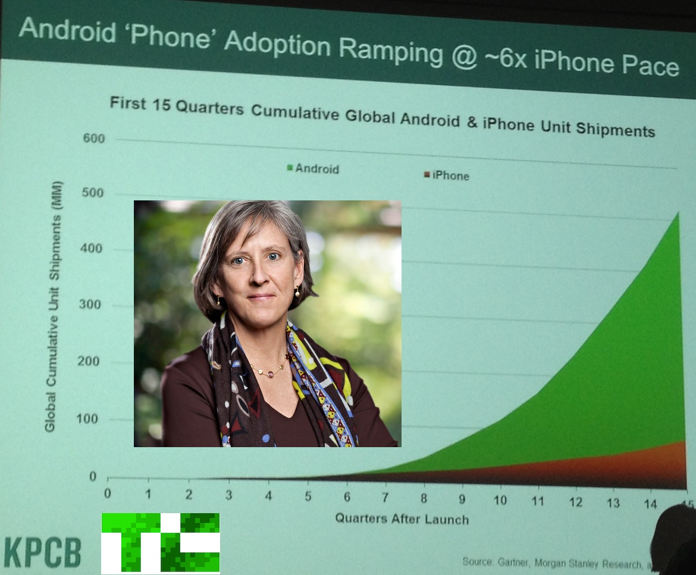

Trending
- 1.  Mary Meeker Gives Surprise Mid-Year Internet… Josh Constine
- 2. Apple Reportedly Looking Into Switching From… Darrell Etherington
- 3. Facebook For iOS Gets Photo Filters And… Josh Constine
-
4.
 The Biggest Threat To LinkedIn: The Power Of…
Rip Empson
The Biggest Threat To LinkedIn: The Power Of…
Rip Empson
- 5. Google’s Nexus Strategy In A Nutshell: Cheap… Darrell Etherington
- 6. Is OffersBy.Me Better Than Groupon? Probably… Jay Donovan
- 7. Mobile First, Web Second: Instagram Finally… Alexia Tsotsis
- 8. Foursquare Adds Some “Magic” To Its Explore… Drew Olanoff
- 9. Jive Software Acquires Meetings.io and… Alex Williams
- 10. With Mobile Impressions, Tumblr Pushes Past 20… Kim-Mai Cutler